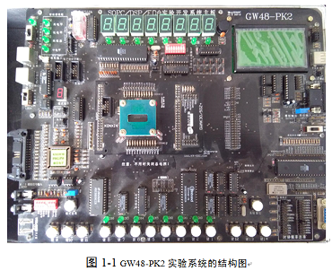
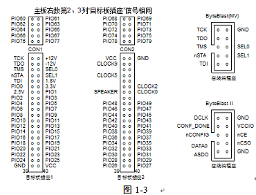
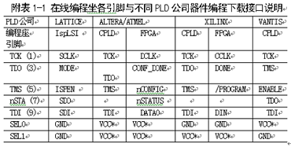
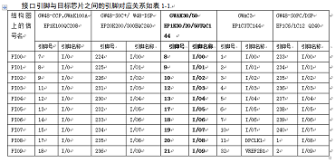
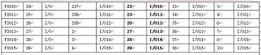
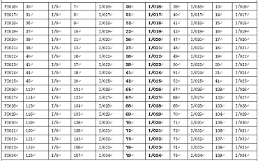
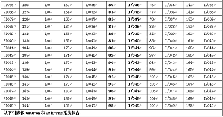
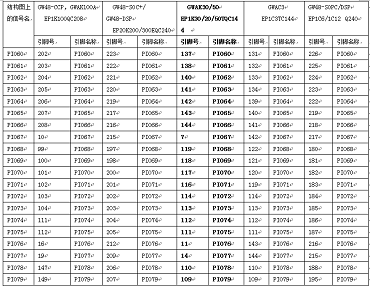
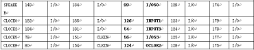

a：闲置不用GW48系统时，必须关闭电源，拔下电源插头！！！
b：在实验中，当选中某种模式后，要按一下右侧的复位键，以使系统进入该结构模式工作。
c：换目标芯片时要特别注意，不要插反或插错，也不要带电插拔，确信插对后才能开电源。其它接口都可带 电插拔。请特别注意，尽可能不要随意插拔适配板，及实验系统上的其他芯片。
d：并行口工作模式设置在“EPP”模式！
e: 跳线座“SPS” 默认向下短路（PIO48）；右侧开关默认拨向“TO MCU”。
f: 对于GW48-PK2系统，左下角拨码开关除第4档“DS8使能”向下拨（8数码管显示）外，其余皆默认向上。
以下将详述GW48系列SOPC/EDA实验开发系统（GW48-PK2、GK、CK）结构与使用方法，对于这3种型号的不同之处将给予单独 指出。该系统的实验电路结构是可控的。即可通过控制接口键，使之改变连接方式以适应不同的实验需要。因而，从物理结构 上看，实验板的电路结构是固定的，但其内部的信息流在主控器的控制下，电路结构将发生变化---重配置。这种“多任务重配 置”设计方案的目的有3个：1、适应更多的实验与开发项 目；2、适应更多的PLD公司的器件；3、适应更多的不同封装的FPGA和CPLD器件。系统板面主要部件及其使用方法说明如下 （请参看相应的实验板板面）。以下是对GW48系统主板功能块的注释。
“模式选择”键 ：按动该键能使实验板产生12种不同的实验电路结构。这些结构如第二节的13 张实验电路结构图所示。例 如选择了“NO.3”图，须按动系统板上的“模式选择”键，直至数码管“模式指示”显示“3”， 于是系统即进入了NO.3 图所示的实验电路结构。
GW48-PK2实验系统与GWA1C6A型适配板间的联接引脚接口如图1-3，
       GWAK30/50适配板主要使用说明：
（1）“JTAG PORT”接口：可以通过USB-Blaster下载器实现
◆SOF文件对FPGA的配置下载
◆ POF文件通过JTAG模式对CPLD编程下载
◆ JIC文件通过JTAG口对于FPGA配置器件EPCSx的编程下载
◆ IDE环境中NiosII软件下载和调试
◆ SignalTapII逻辑分析仪使用
◆ In-System Memory Content Editor应用
（2）“AS PORT”接口：可以通过USB-Blaster下载器实现
◆POF文件通过AS模式对EPCS系列Flash的编程下载